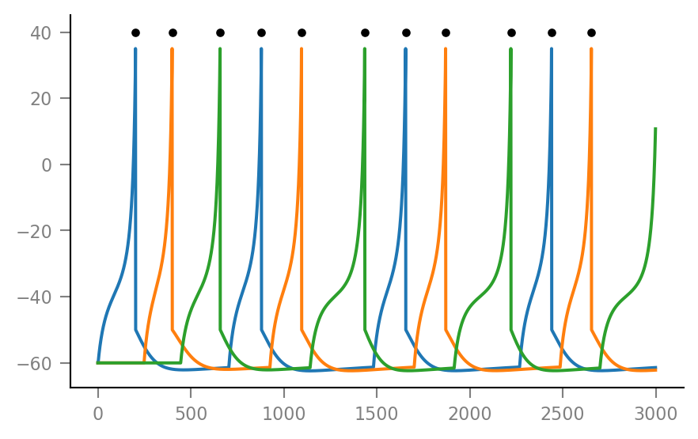

2020-01-02 Trying out a full network simulation¶
from voltage_to_wiring_sim.support.notebook_init import *
vtws = v; # using 'v' for voltage below
Preloading:
- numpy … (0.11 s)
- matplotlib.pyplot … (0.22 s)
- numba … (0.30 s)
Importing from submodules … ✔
Imported `np`, `mpl`, `plt`
Imported codebase (`voltage_to_wiring_sim`) as `v`
Imported `*` from `v.support.units`
Setup autoreload
Params¶
izhikevich parameters for cortical regular spiking neurons
C = 100 * pF
k = 0.7 * (nS/mV)
b = -2 * nS
v_r = -60 * mV
v_t = -40 * mV
v_peak = 35 * mV
v_syn = 0 * mV
c = -50 * mV
a = 0.03 / ms
d = 100 * pA;
connection_strengths = np.array([
[0, 1, 0],
[0, 0, 0.8],
[1, 0, 0],
]) * 12 * nS # [from, to]
τ_syn = 7 * ms;
dt = 0.1 * ms
sim_duration = 0.3 * second;
spike_delay = (4 + 0.5) * ms; # axonal conduction + synaptic delay
Scholarpedia on axonal conduction delay
Initial synaptic conductances
g_0 = np.array([10, 0, 0]) * nS;
Sim¶
def to_num_timesteps(time):
return round(time / dt)
num_sim_timesteps = to_num_timesteps(sim_duration)
spike_delay_timesteps = to_num_timesteps(spike_delay)
45
num_neurons = connection_strengths.shape[0];
signals_shape = (num_sim_timesteps, num_neurons)
v = np.zeros(signals_shape)
u = np.zeros(signals_shape)
g = np.zeros(signals_shape) # g_syn
I = np.zeros(signals_shape); # I_syn
spikes = [[] for _ in range(num_neurons)]
num_processed_spikes = [0 for _ in range(num_neurons)]
dg_dt = lambda t,n: -g[t,n] / τ_syn
dv_dt = lambda t,n: (k * (v[t,n] - v_r) * (v[t,n] - v_t) - u[t,n] - I[t,n]) / C
du_dt = lambda t,n: a * (b * (v[t,n] - v_r) - u[t,n])
for t in range(num_sim_timesteps):
for n in range(num_neurons):
if t == 0:
g[t, n] = g_0[n]
v[t, n] = v_r
u[t, n] = 0
else:
g[t, n] += g[t-1, n] + dt * dg_dt(t-1, n)
if (num_processed_spikes[n] < len(spikes[n])
and spikes[n][num_processed_spikes[n]] + spike_delay_timesteps == t):
for m in range(num_neurons):
g[t, m] += connection_strengths[n, m]
num_processed_spikes[n] += 1
v[t, n] = v[t-1, n] + dt * dv_dt(t-1, n)
u[t, n] = u[t-1, n] + dt * du_dt(t-1, n)
if v[t, n] >= v_peak:
v[t-1, n] = v_peak
v[t, n] = c
u[t, n] += d
spikes[n].append(t)
I[t, n] = g[t, n] * (v[t, n] - v_syn)
Output¶
spikes
[[203, 880, 1656, 2441], [400, 1096, 1871, 2655], [658, 1436, 2222]]
for n in range(num_neurons):
plt.plot(v[:,n] / mV)
for s in spikes[n]:
plt.plot(s, 40, 'k.')

for n in range(num_neurons):
plt.plot(g[:,n] / nS)
for n in range(num_neurons):
plt.plot(u[:,n] / pA)
Reproducibility¶
v
array([[0, 0, 0],
[0, 0, 0],
[0, 0, 0],
...,
[0, 0, 0],
[0, 0, 0],
[0, 0, 0]])